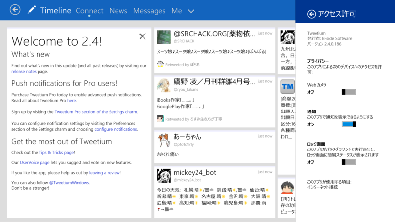

Tweetium 2.4.0.186、Mevy 2.8.1.35、Aristea 0.9.4.2
公開日：

とりあえず Twitter クライアントからアップデートしてみるか。
Tweetium 2.4.0.186

v2.4
- Push notifications for Pro users!
- Increased multiple account limit to 7 accounts for Pro users.
- Improved URL recognition to match Twitter's implementation, so tweet character counts should always be correct now.
- Changing accounts now properly saves the last read state of the current view before switching
- Improved DM conversation interactions in vertical mode
For full details of this and past releases, visit the support link.
Pro アカウントは半月半年で 400 円。
Mevy 2.8.1.35

[2014/03/31] v2.8.1.35
- 共有画面で広告OFFが反映されていなかった問題を修正
- ローカライズ漏れ修正
- 新UIでの広告位置調整
- 検索結果のツイートをクリックした際にポップアップが出ていた問題の修正
[2014/03/28] v2.8.0.34
- 検索機能追加（閲覧のみ）
- プロフィール画面にフォローボタン追加
- クリップボードから画像の貼り付け
- 共有画面でもCntrl+Enterが可能に
- 設定に質問フォーム設置
- 列数の切り替え幅調整
- 通知カラムのアイコン変更
- 詳細画面の画像表示調整
- 特定の文字列を含んでいた場合にツイートできない問題の修正
- 新UI（β）を試すオプション追加
- 新ツイート欄に連続ツイート機能追加

旧 UI（安定版）と検索画面。

新 UI（β）。新しいほうが好きかな！
Aristea 0.9.4.2
v0.9.4
- 黒系カラーテーマを追加しました
- クイック操作ボタンを追加しました
- 画像プレビューの不具合を修正しました
- セマンティックズームの不具合を修正しました
- 細かいUIの修正をしました
- 細かい不具合を修正しました

テーマの変更は要再起動。ダークテーマカッコいいな！

セマンティックズームあったのはしらなかった。あんまり使いこなしてないからあれなんだけど、カラムの追加ってどうするんじゃい？